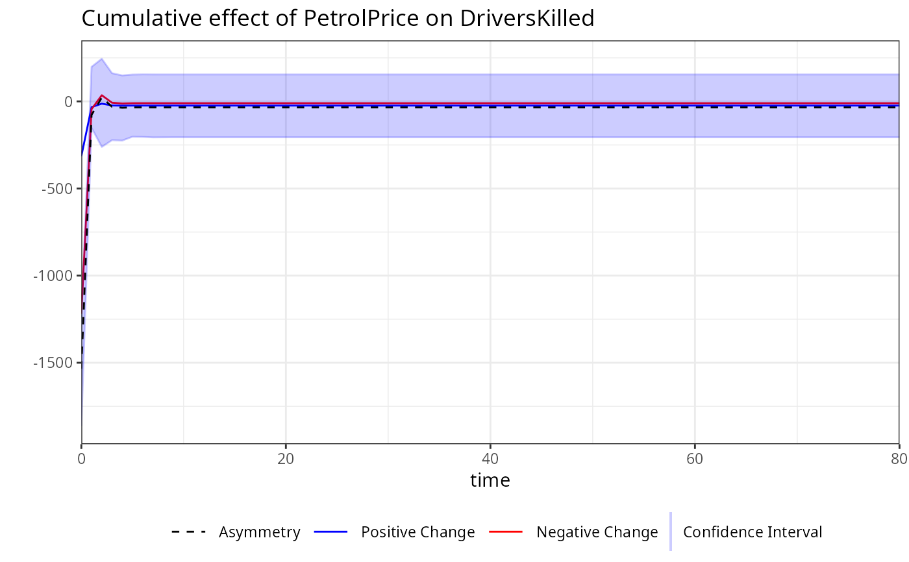

This function computes bootstrap confidence intervals (CI) for dynamic
multipliers of a specified variable in a model estimated using the
kardl package. The bootstrap method generates resampled datasets to
estimate the variability of the dynamic multipliers, providing upper and
lower bounds for the confidence interval.
Usage
bootstrap(
kardl_model,
horizon = 80,
replications = 100,
level = 95,
min_prob = 0,
seed = NULL,
...
)Arguments
- kardl_model
An object of class
kardl_lmorkardl_longrunproduced by thekardlorkardl_longrunfunctions. This object provides the model information used to compute the dynamic multipliers.- horizon
An integer specifying the horizon over which dynamic multipliers will be computed. The horizon defines the time frame for the analysis (e.g., 40 periods).
- replications
An integer indicating the number of bootstrap replications to perform. Higher values increase accuracy but also computational time. Default is
100.- level
A numeric value specifying the confidence level for the intervals (e.g., 95 for 95% confidence). Default is
90.- min_prob
A numeric value specifying the minimum p-value threshold for including coefficients in the bootstrap. Coefficients with p-values above this threshold will be set to zero in the bootstrap samples. Default is
0(no threshold). This parameter allows users to control the inclusion of coefficients in the bootstrap process based on their statistical significance. Setting a threshold can help focus the analysis on more relevant variables, but it may also exclude potentially important effects if set too stringently.- seed
An optional integer to set the random seed for reproducibility of the bootstrap results. If not provided, the bootstrap will use the current random state.
- ...
Additional arguments (currently not used).
Value
A list containing the following elements:
mpsi: A data frame containing the dynamic multiplier estimates along with their upper and lower confidence intervals for each variable and time horizon.
level: The confidence level used for the intervals (e.g 95).
horizon: The horizon over which the multipliers were computed (e.g., 40).
vars: A list of variable information extracted from the model, including dependent variable, independent variables, asymmetric variables, and deterministic terms.
replications: The number of bootstrap replications performed.
type: A character string indicating the type of analysis, in this case "bootstrap".
Details
The mpsi component of the output contains the dynamic multiplier
estimates along with their upper and lower confidence intervals. These
values are provided for each variable and at each time horizon.
See also
mplier for calculating dynamic multipliers
Examples
# Example usage of the bootstrap function
# Fit a model using kardl
kardl_model <- kardl(
DriversKilled ~ PetrolPrice + drivers + asy(PetrolPrice) +
det(law) + trend,
Seatbelts,
mode = c(1, 2, 3, 0)
)
# Perform bootstrap with specific variables for plotting.
boot <- bootstrap(kardl_model,
horizon = 40, level = 95, min_prob = 0,
replications = 5, seed = 123L
)
# The boot object will include all plots for the specified variables
# Displaying the boot object provides an overview of its components.
names(boot)
#> [1] "mpsi" "level" "horizon" "vars" "replications"
#> [6] "type"
# Inspect the first few rows of the dynamic multiplier estimates.
head(kardl_extract(boot, "multipliers"))
#> h PetrolPrice_POS PetrolPrice_NEG PetrolPrice_dif drivers_POS drivers_NEG
#> 1 0 -304.280928 -1061.52868 -1365.80961 0.07966293 -0.07966293
#> 2 1 -61.814753 -212.37870 -274.19345 0.08968203 -0.08968203
#> 3 2 201.223815 867.50746 1068.73128 0.07849161 -0.07849161
#> 4 3 -7.492109 898.32737 890.83526 0.07703254 -0.07703254
#> 5 4 -45.445132 -42.43396 -87.87909 0.07860427 -0.07860427
#> 6 5 -16.174940 -50.68350 -66.85844 0.07881651 -0.07881651
#> drivers_dif PetrolPrice_CI_upper PetrolPrice_CI_lower
#> 1 0 -938.99956 -3796.38005
#> 2 0 861.20791 -1161.15729
#> 3 0 1969.96034 -1105.81184
#> 4 0 2979.52196 -51.77537
#> 5 0 36.02301 -514.55055
#> 6 0 30.14345 -453.50063
summary(boot)
#> Summary of Dynamic Multipliers
#> Horizon: 40
#>
#> h PetrolPrice_POS PetrolPrice_NEG PetrolPrice_dif
#> Min. : 0 Min. :-304.28 Min. :-1061.53 Min. :-1365.81
#> 1st Qu.:10 1st Qu.: -14.99 1st Qu.: 66.98 1st Qu.: 51.99
#> Median :20 Median : -14.99 Median : 66.98 Median : 51.99
#> Mean :20 Mean : -18.41 Mean : 67.59 Mean : 49.18
#> 3rd Qu.:30 3rd Qu.: -14.99 3rd Qu.: 66.98 3rd Qu.: 51.99
#> Max. :40 Max. : 201.22 Max. : 898.33 Max. : 1068.73
#> drivers_POS drivers_NEG drivers_dif PetrolPrice_CI_upper
#> Min. :0.07703 Min. :-0.08968 Min. :0 Min. :-939.0
#> 1st Qu.:0.07860 1st Qu.:-0.07860 1st Qu.:0 1st Qu.: 150.3
#> Median :0.07860 Median :-0.07860 Median :0 Median : 150.3
#> Mean :0.07886 Mean :-0.07886 Mean :0 Mean : 250.2
#> 3rd Qu.:0.07860 3rd Qu.:-0.07860 3rd Qu.:0 3rd Qu.: 150.3
#> Max. :0.08968 Max. :-0.07703 Max. :0 Max. :2979.5
#> PetrolPrice_CI_lower
#> Min. :-3796.38
#> 1st Qu.: -105.92
#> Median : -105.92
#> Mean : -263.58
#> 3rd Qu.: -105.92
#> Max. : -51.78
# Retrieve plots generated during the bootstrap process.
# Accessing all plots
plot(boot)
#> Warning: Multiple variables selected. Only the first one will be plotted.
 # Accessing the plot for a specific variable by its name.
plot(boot, variable = "drivers")
# Accessing the plot for a specific variable by its name.
plot(boot, variable = "drivers")
 plot(boot, variable = "PetrolPrice")
plot(boot, variable = "PetrolPrice")
 # You can also specify a title for the plot.
plot(boot,
variable = "PetrolPrice",
title = "Dynamic Multipliers for PetrolPrice"
)
# You can also specify a title for the plot.
plot(boot,
variable = "PetrolPrice",
title = "Dynamic Multipliers for PetrolPrice"
)
 # To remove the title from the plot, you can set the title argument
# to an empty string.
plot(boot, variable = "drivers", title = "")
# To remove the title from the plot, you can set the title argument
# to an empty string.
plot(boot, variable = "drivers", title = "")
 library(magrittr)
Seatbelts %>%
kardl(DriversKilled ~ drivers + asym(PetrolPrice) + trend,
maxlag = 2,
data = .
) %>%
bootstrap(replications = 5) %>%
plot(variable = "PetrolPrice")
library(magrittr)
Seatbelts %>%
kardl(DriversKilled ~ drivers + asym(PetrolPrice) + trend,
maxlag = 2,
data = .
) %>%
bootstrap(replications = 5) %>%
plot(variable = "PetrolPrice")
